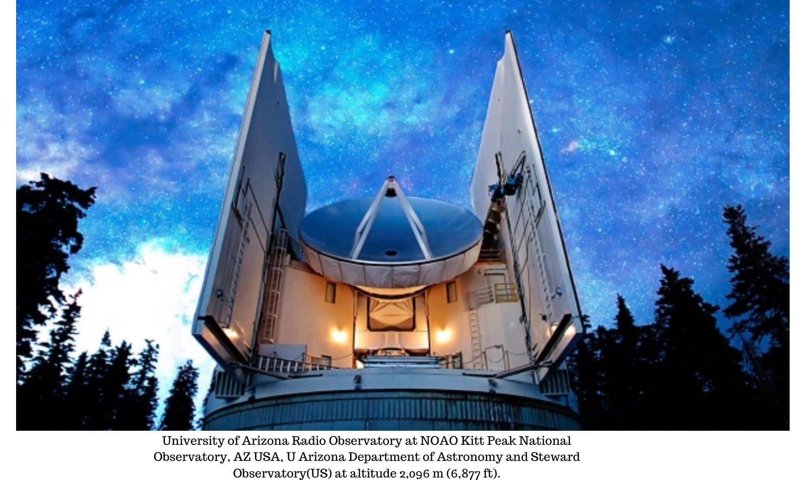

O buraco negro central de Messier 87, uma enorme galáxia no aglomerado de Virgem. Colaboração do Event Horizon Telescope/ESO , CC BY
Uma colaboração única usando um telescópio virtual do tamanho da Terra mostra como a ciência está mudando no século 21Em 2019, a colaboração do Event Horizon Telescope (EHT) produziu a primeira imagem de um buraco negro, impressionando o mundo. Agora, os cientistas estão indo mais longe. A colaboração da próxima geração do Event Horizon Telescope (ngEHT) visa criar vídeos de buracos negros de alta qualidade.
Mas essa colaboração de última geração também é inovadora de outras maneiras. É a primeira grande colaboração de física que reúne perspectivas de ciências naturais, ciências sociais e humanidades. Um telescópio virtual abrangendo o planeta Quanto maior um telescópio, melhor é ver coisas que parecem minúsculas de longe. Para produzir imagens de buracos negros, precisamos de um telescópio quase do tamanho da própria Terra. É por isso que o EHT usa muitos telescópios e conjuntos de telescópios espalhados pelo globo para formar um único telescópio virtual do tamanho da Terra. Isso é conhecido como interferometria de linha de base muito longa .
O astrofísico de Harvard Shep Doeleman, diretor fundador do EHT, comparou esse tipo de astronomia ao uso de um espelho quebrado. Imagine quebrar um espelho e espalhar os pedaços pelo mundo. Em seguida, você registra a luz capturada por cada uma dessas peças enquanto acompanha o tempo e coleta esses dados em um supercomputador para reconstruir virtualmente um detector do tamanho da Terra.
A primeira imagem de 2019 de um buraco negro foi feita emprestando telescópios existentes em seis locais. Agora, novos telescópios em novos locais estão sendo construídos para preencher melhor as lacunas do espelho quebrado. A colaboração está atualmente em processo de seleção de locais ideais em todo o mundo, para aumentar o número de locais para aproximadamente 20.
Este ambicioso empreendimento precisa de mais de 300 especialistas organizados em três grupos de trabalho técnico e oito grupos de trabalho científico. O grupo de trabalho de história, filosofia e cultura acaba de publicar um relatório histórico descrevendo como os estudiosos de ciências humanas e sociais podem trabalhar com astrofísicos e engenheiros desde os primeiros estágios de um projeto. O relatório tem quatro áreas de foco: formação de conhecimento colaborativo, fundamentos filosóficos, algoritmos e visualização e localização responsável do telescópio.
Uma antena parabólica de rádio apontando para um céu azul escuro, mostrada de um ângulo baixo Como podemos todos colaborar? Se você já tentou escrever um artigo (ou qualquer coisa!) Com outra pessoa, sabe como pode ser difícil. Agora imagine tentar escrever um artigo científico com mais de 300 pessoas.
Deve-se esperar que cada autor acredite e esteja disposto a defender cada parte do artigo e suas conclusões? Como todos nós devemos determinar o que será incluído? Se todos tiverem que concordar com o que está incluído, isso resultará na publicação apenas de resultados conservadores e diluídos? E como você permite a criatividade individual e a ciência que ultrapassa os limites (especialmente quando você está tentando ser o primeiro a capturar algo)? Para resolver essas questões, é importante equilibrar as abordagens colaborativas e estruturar o envolvimento de todos de forma a promover o consenso, mas também permitir que as pessoas expressem divergências. A diversidade de crenças e práticas entre os membros da colaboração pode ser benéfica para a ciência. Como visualizamos os dados?
As escolhas estéticas em relação às imagens e vídeos finais do buraco negro ocorrem em um contexto mais amplo de cultura visual. Na realidade, as chamas azuis são mais quentes do que as chamas laranjas ou amarelas. Mas na imagem de cores falsas acima de Sagitário A* – o buraco negro no centro da Via Láctea – a paleta de cores de tons laranja-avermelhados foi escolhida, pois acreditava-se que o laranja comunicaria a um público mais amplo o quão quente é o material brilhante. em torno do buraco negro é.
Essa abordagem se conecta a práticas históricas de imagens científicas assistidas por tecnologia, como as de Galileu , Robert Hooke e Johannes Hevelius . Esses cientistas combinaram suas primeiras imagens telescópicas e microscópicas com técnicas artísticas para que fossem legíveis para o público não especializado (particularmente aqueles que não tinham acesso aos instrumentos relevantes). Como a filosofia pode ajudar
Vídeos de buracos negros seriam de grande interesse para os físicos teóricos. No entanto, há uma ponte entre a teoria matemática formal e o confuso mundo dos experimentos, onde as suposições idealizadas muitas vezes não se sustentam. Os filósofos podem ajudar a preencher essa lacuna com considerações de risco epistêmico – como o risco de perder a verdade ou cometer um erro. A filosofia também ajuda a investigar as suposições subjacentes que os físicos podem ter sobre um fenômeno.
Por exemplo, uma abordagem para descrever buracos negros é chamada de “ teorema sem cabelo ”. É a ideia de que um buraco negro isolado pode ser simplificado para apenas algumas propriedades, e não há nada complexo (cabeludo) nisso. Mas o teorema sem cabelo se aplica a buracos negros estáveis. Baseia-se na suposição de que os buracos negros eventualmente se estabelecem em um estado estacionário.
Localização responsável do telescópio A escolha de locais para telescópios, ou localização de telescópios, tem sido historicamente determinada por considerações técnicas e econômicas – incluindo clima, claridade atmosférica, acessibilidade e custos. Tem havido uma histórica falta de consideração pelas comunidades locais, incluindo os povos das Primeiras Nações.
Como destaca a luta em Mauna Kea, no Havaí , as colaborações científicas são obrigadas a abordar considerações éticas, sociais e ambientais quando implantadas. O ngEHT visa promover práticas responsáveis de localização. Ele reúne especialistas em filosofia, história, sociologia, defesa da comunidade, ciência e engenharia para contribuir com o processo de tomada de decisão de maneiras que incluem fatores culturais, sociais e ambientais ao escolher um novo local para o telescópio.
No geral, esta colaboração é um exemplo empolgante de como planos ambiciosos exigem abordagens inovadoras – e como as ciências estão evoluindo no século XXI.